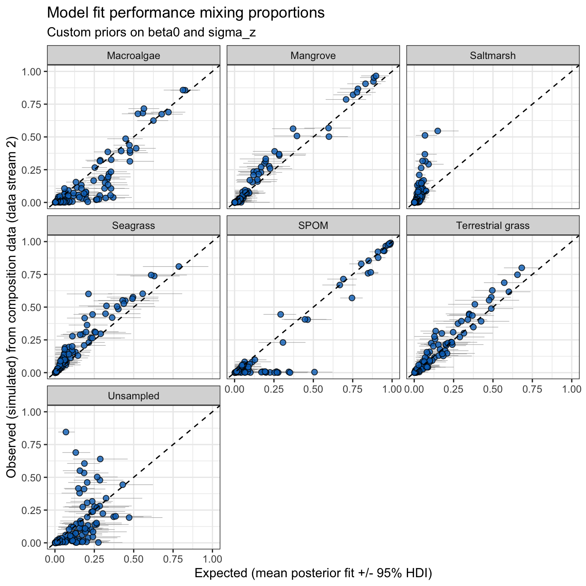

vignettes/custom-stan-code.Rmd
custom-stan-code.RmdBy default, run_mixmustr_models() calls
build_stancode() internally, so the Stan program for each
model variant is (re)generated and written to
model_choices$code_path every time models are run. This is
convenient, but it also means that any manual edits to those
.stan files would be overwritten.
Advanced users may want to change parts of the Stan program, for example to use more informative priors that reflect expert knowledge. This vignette illustrates a workflow to do so:
build_stancode().run_mixmustr_models(..., build_code = FALSE), which skips
build_stancode() and uses the .stan file as
is.We assume familiarity with the Introduction to MixMustR vignette.
library(MixMustR)
rstan::rstan_options(auto_write = TRUE)
options(mc.cores = parallel::detectCores())We use the variant with fixed sampled-source signatures, a fixed
unsampled-source signature, and independent observations (row 6 of
mixmustr_models), which is the quickest to fit.
model_choice <- mixmustr_models[6, ]
model_choice
#> sample_tracer fix_unsampled hierarchical
#> 6 FALSE TRUE FALSE
#> code_path
#> 6 stan/sample_tracer_FALSE_fix_unsampled_TRUE_hierarchical_FALSE.stanRather than using the default code_path, we point it to
a new file so that the customised program is kept separate from the
standard ones. Note that the file name (without extension) is also used
as the Stan model name and as the name of the corresponding element in
the output of run_mixmustr_models(). Here we use a
temporary directory; in a real analysis you would typically use a folder
within your project.
stan_dir <- file.path(tempdir(), "mixmustr_stan")
dir.create(stan_dir, showWarnings = FALSE)
model_choice$code_path <- file.path(stan_dir, "custom_priors.stan")Now generate the standard Stan program for this variant and write it to disk:
build_stancode(
sample_tracer = model_choice$sample_tracer,
fix_unsampled = model_choice$fix_unsampled,
hierarchical = model_choice$hierarchical,
code_path = model_choice$code_path
) |>
invisible()
file.exists(model_choice$code_path)
#> [1] TRUEThe priors live in the model block. Let’s print
them:
stan_code <- readLines(model_choice$code_path)
model_start <- grep("^model \\{", stan_code)
prior_lines <- grep(" ~ ", stan_code)
prior_lines <- prior_lines[prior_lines > model_start]
cat(stan_code[prior_lines], sep = "\n")
#> to_vector(z_raw) ~ std_normal();
#> sigma_z ~ normal(0, 1);
#> beta0 ~ normal(0, 1.5);
#> log_sigma_y_raw ~ normal(0, 0.5);
#> nu_rho ~ gamma(2, 0.1);
#> ln_rho[n, j] ~ student_t(nu_rho, log_p_n[j], sigma_ln_rho[n, j]);
#> Y[n] ~ normal(mu_n, sigma_n);The last two lines are the stream-2 and stream-1 likelihoods; the remaining ones are priors. For this variant:
beta0 are the baseline logits of each sampled source
relative to the unsampled source (the reference category).sigma_z are the observation-level standard deviations
of those logits.log_sigma_y_raw controls the residual tracer scale for
data stream 1.nu_rho are the degrees of freedom of the Student-t
likelihood for data stream 2.Suppose prior knowledge suggests that the mixing proportions of
sampled sources are unlikely to be very extreme relative to the
unsampled source, and that observation-level departures from those
baseline logits should be small. We tighten the prior on
beta0 and replace the half-normal prior on
sigma_z with an exponential prior.
The .stan file can be edited in any text editor. Here we
do it programmatically, checking that each line to be replaced is
present exactly once:
replacements <- c(
" beta0 ~ normal(0, 1.5);" = " beta0 ~ normal(0, 1); // modified prior",
" sigma_z ~ normal(0, 1);" = " sigma_z ~ exponential(2); // modified prior"
)
for (old in names(replacements)) {
stopifnot(sum(stan_code == old) == 1)
stan_code[stan_code == old] <- replacements[[old]]
}
writeLines(stan_code, model_choice$code_path)It is good practice to check that the edited program still parses before fitting it:
rstan::stanc(file = model_choice$code_path)$status
#> [1] TRUEWhen editing the Stan code, keep in mind that:
data block must remain compatible with the data
list produced by mixmustr_wrangle_input(). The
sample_tracer, fix_unsampled, and
hierarchical columns in model_choice must
therefore match the variant the file was generated from.make_post_prop_long() and mixmustr_bayes_R2())
rely on the mixing-proportion matrix p, so it should not be
renamed or removed.mixmustr_wrangle_input() before fitting, so priors on
tracer-scale quantities apply on the standardised scale.We now call run_mixmustr_models() with
build_code = FALSE. This skips
build_stancode() so the edited file is not overwritten. If
the file at code_path did not exist,
run_mixmustr_models() would stop with an informative
error.
model_fits <- run_mixmustr_models(
model_choice, synthetic_df_convergent, tracer_parameters,
sigma_ln_rho = 1, build_code = FALSE, iter = 2e3, warmup = 1e3,
chains = 4, cores = 4
)The output is named after the .stan file. We can confirm
that the fitted model used the modified priors:
names(model_fits)
#> [1] "custom_priors"
fit <- model_fits$custom_priors$model
fitted_code <- strsplit(rstan::get_stancode(fit), "\n")[[1]]
cat(grep("modified prior", fitted_code, value = TRUE), sep = "\n")
#> sigma_z ~ exponential(2); // modified prior
#> beta0 ~ normal(0, 1); // modified priorAnd inspect the parameters whose priors were changed:
print(fit, pars = c("beta0", "sigma_z"), probs = c(0.025, 0.5, 0.975))
#> Inference for Stan model: custom_priors.
#> 4 chains, each with iter=2000; warmup=1000; thin=1;
#> post-warmup draws per chain=1000, total post-warmup draws=4000.
#>
#> mean se_mean sd 2.5% 50% 97.5% n_eff Rhat
#> beta0[1] 0.17 0.01 0.20 -0.23 0.18 0.54 1304 1.00
#> beta0[2] -1.10 0.01 0.26 -1.61 -1.09 -0.61 1337 1.00
#> beta0[3] -1.79 0.00 0.18 -2.16 -1.79 -1.45 2241 1.00
#> beta0[4] -0.77 0.01 0.28 -1.33 -0.78 -0.23 1054 1.00
#> beta0[5] -0.43 0.01 0.34 -1.09 -0.43 0.24 637 1.00
#> beta0[6] -0.39 0.01 0.21 -0.78 -0.39 0.01 1568 1.00
#> sigma_z[1] 1.20 0.01 0.17 0.91 1.19 1.55 823 1.00
#> sigma_z[2] 2.07 0.00 0.18 1.75 2.06 2.46 1546 1.00
#> sigma_z[3] 0.50 0.01 0.27 0.03 0.50 1.00 471 1.01
#> sigma_z[4] 2.32 0.01 0.24 1.87 2.31 2.81 1103 1.00
#> sigma_z[5] 3.11 0.01 0.24 2.66 3.10 3.61 903 1.00
#> sigma_z[6] 1.38 0.00 0.16 1.08 1.37 1.70 1094 1.00
#>
#> Samples were drawn using NUTS(diag_e) at Thu Oct 22 12:57:48 2026.
#> For each parameter, n_eff is a crude measure of effective sample size,
#> and Rhat is the potential scale reduction factor on split chains (at
#> convergence, Rhat=1).The fitted model can be used with all MixMustR
post-processing tools, as usual:
library(ggplot2)
make_post_prop_long(
fit, tracer_parameters$mus, synthetic_df_convergent, target = "df_stream_2",
n = 1
) |>
plot_multiple_faceted_scatter_avg() +
theme(legend.position = "none") +
labs(
y = "Observed (simulated) from composition data (data stream 2)",
title = "Model fit performance mixing proportions",
subtitle = "Custom priors on beta0 and sigma_z"
)

mixmustr_bayes_R2(
fit, summary = TRUE, data_streams_list = synthetic_df_convergent,
target = "df_stream_2", order_ref = tracer_parameters$mus$source
)
#> Source mean 2.5%HDI 97.5%HDI
#> 1 Macroalgae 0.80 0.77 0.84
#> 2 Mangrove 0.93 0.90 0.96
#> 3 Saltmarsh 0.11 0.03 0.24
#> 4 Seagrass 0.81 0.75 0.87
#> 5 SPOM 0.90 0.89 0.92
#> 6 Terrestrial grass 0.85 0.79 0.90
#> 7 Unsampled 0.33 0.27 0.40build_stancode() with a custom
code_path to generate the standard Stan program for the
chosen variant..stan file (e.g., priors), keeping the
data block and the mixing-proportion matrix p
intact.run_mixmustr_models(..., build_code = FALSE)
so the edited file is used as is.